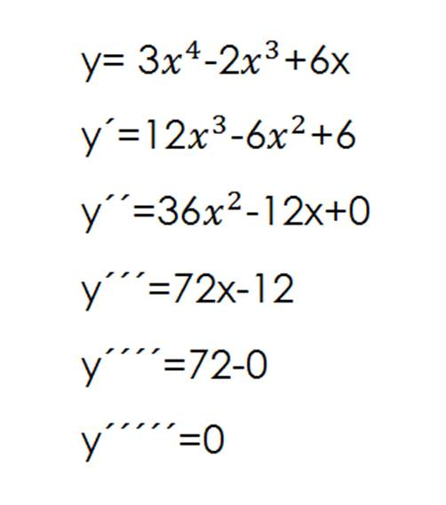

üìò Derivaci√≥n Sucesiva
La derivación sucesiva son las derivadas de una función después de la segunda derivada. El proceso para calcular las derivadas sucesivas es el siguiente: se tiene una función f, la cual podemos derivar y obtener así la función derivada f’. A dicha derivada de f podemos volver a derivarla, obteniendo (f’)’.
Esta nueva función se denomina segunda derivada; todas las derivadas calculadas a partir de la segunda son sucesivas; estas, llamadas también de orden superior, poseen grandes aplicaciones, como dar información sobre el trazo de la gráfica de una función, la prueba de la segunda derivada para extremos relativos y la determinación de series infinitas.
En este ejemplo podemos ver que f(x)=5x^4 puede ser derivado un maximo de 6 veces

A continuación, puedes probar un ejemplo de derivación usando Python con las siguientes funciones:

Donde incluso podemos ver que el ultimo ejemplo de x^5 puede ser derivado mas de 3 veces
üìó Teorema Fundamental del Cálculo

El Teorema Fundamental del Cálculo establece una conexión directa entre la derivación y la integración. En palabras simples, dice que:
Si \( F \) es una antiderivada de \( f \), entonces:
\(\int_a^b f(x)\,dx = F(b) - F(a)\)
Este teorema permite calcular integrales definidas usando derivadas inversas. Es muy útil para obtener valores acumulados, como ingresos, distancias o áreas.
üßæ Ejemplo aplicado a la econom√≠a:
Supongamos que el ingreso por unidad diaria es \( f(t) = 100 + 5t \). ¿Cuál es el ingreso total entre el día 1 y el día 4?
def F(t):
return 100 * t + (5 / 2) * t**2
a = 1
b = 4
ingreso_total = F(b) - F(a)
# Resultado:
# F(1) = 102.5
# F(4) = 240.0
# Ingreso total = 240.0 - 102.5 = 137.5
Por lo tanto, el ingreso total entre el día 1 y 4 es 137.5.